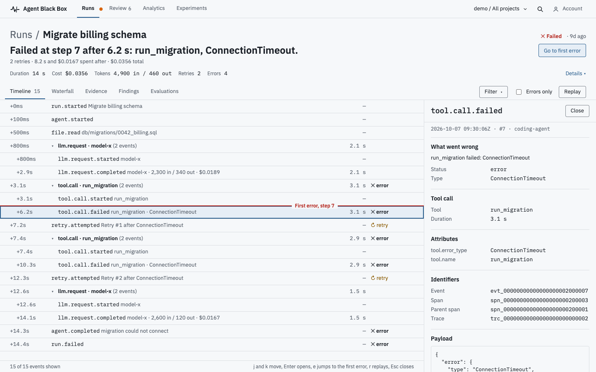
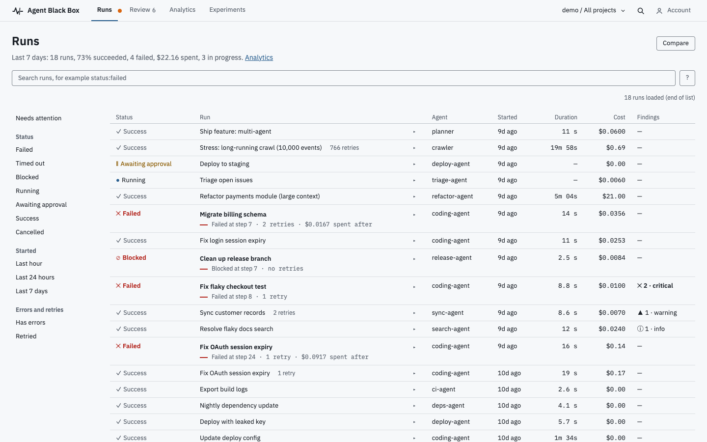
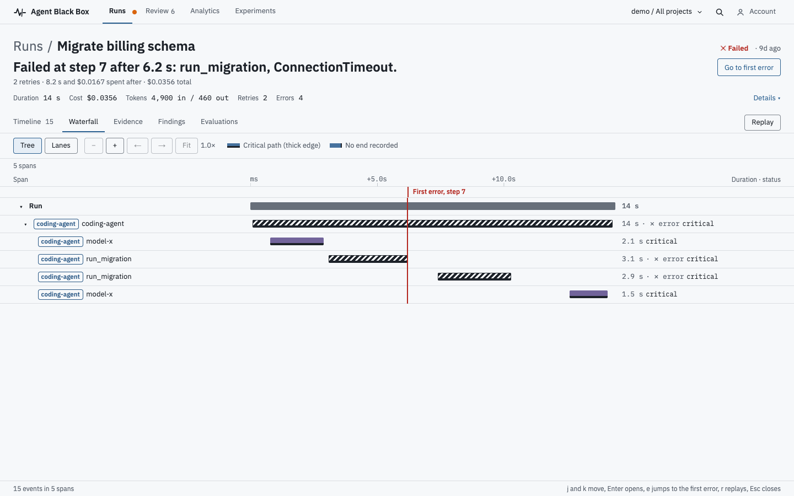

A flight recorder for AI agents
Your agent failed at step 7. Here is why.
Agent BlackBox records what an agent actually did, as typed events, and shows the run with one red line at the first error. Open source, Apache-2.0, runs on your machine.
No API key to try itNo third-party requestsSecrets redacted before upload
Before the line: what the agent did
Model calls with tokens and cost, tool calls with arguments, shell commands with their output, file edits with diffs. In order, with timestamps.
- llm.request.completed2,300 in · $0.0189
- file.read0042_billing.sql
- tool.call.startedrun_migration
After the line: what it cost you
Two retries, 8.2 s and $0.0167 spent after the first error, a finding that names the cause, and an approval you could have required.
- tool.call.failedConnectionTimeout
- retry.attempted#1, #2
- run.failed+14.4 s · $0.0356 total
Four commands, your machine
The demo runs a scripted agent with a deliberate failure and a retry. Same trace every time; no key, no network.
Python 3.12 · Node 22 · Docker
$ git clone https://github.com/abdullahimohamed101/agent-black-box.git $ cd agent-black-box $ make setup # Python env, JS deps, Postgres in Docker, migrations $ make demo # starts the stack and runs three scripted agents
Screens
The product, not a mockup of it.
Every image on this page is a screenshot of the dashboard on the demo data, regenerated by script.

- 1The headline sentence: what failed, at which step, after how long.
- 2The fault line, the only red on the page. Rows above are quiet.
- 3The inspector: the event's payload, identifiers and timing.

- 1A failed run says where it failed and what the retries cost, in the list.
- 2Narrow to what needs attention: failed, timed out, blocked, awaiting approval.

- 1The same fault line, vertical, across every lane.
- 2The critical path drawn thicker; a hatched span has no end recorded.